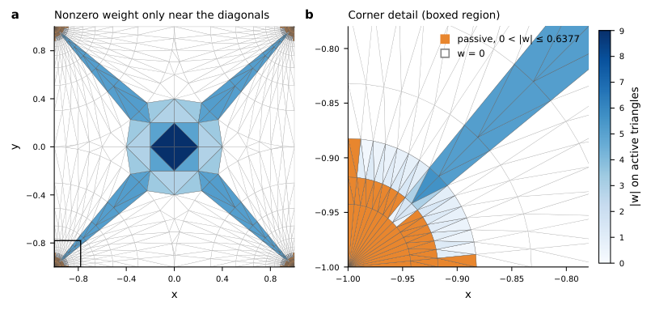

Parts of the certificate theory and selected numerical certificates for the square's Friedrichs constant are formally checked in Lean 4 with Mathlib.
Abstract
The inf-sup constant $β(Ω)$ of the divergence governs the stability of the Stokes problem. For polygons, analytic lower bounds are far from the true value, and numerical methods either bound $β$ from above or require spectral-gap and mesh-fineness hypotheses that cannot presently be checked. We propose a method that produces verified lower bounds without any such hypothesis. It rests on the Friedrichs formulation of $β$ in the Bergman space and on a multiplier identity that controls the non-compact corner contribution pointwise, with the sharp corner constant; the remaining compact part is bounded by a finite matrix inequality that is checked in exact and ball arithmetic. We prove that the bounds converge to $β$. Together with enclosed Rayleigh quotients of explicit trial functions (and, for the square, the bottom $\frac12-\frac1π$ of the essential spectrum) this yields two-sided enclosures, e.g.\ $0.426245\leβ\le0.426252$ for the square and $0.303973\leβ\le0.304078$ for the L-shaped domain. For a square with a square hole, which is neither simply connected nor star-shaped, we obtain $0.154596\leβ\le0.154781$. For the rectangles $(0,1)\times(0,r)$ we enclose $β$ for eight aspect ratios and prove for the five ratios $r\in\{\frac14,\frac38,\frac12,\frac9{16},\frac58\}$ that $β^2$ is an isolated eigenvalue below the essential spectrum; the last two lie beyond the range covered by the explicit bound of Costabel, Crouzeix, Dauge and Lafranche. As an application, the certified values give guaranteed a posteriori bounds for Taylor–Hood approximations of the Stokes equations, including the doubly connected domain, for which, to our knowledge, no explicit lower bound for $β$ had been available.
Problem
The inf-sup (LBB) constant β of the divergence controls the stability of the Stokes problem. On polygons, analytic lower bounds are poor, and numerical methods either give only upper bounds or depend on hypotheses that cannot currently be checked.
Approach
β is expressed through the Friedrichs constant on the Bergman space. A multiplier identity controls the non-compact corner contribution pointwise with the sharp corner constant. The remaining compact part reduces to a finite matrix inequality, which is verified in exact and ball (Arb) arithmetic. Parts of the argument (the Taylor lemma, the representer identity, the dual form, the proof of Theorem 4.13) and some certificates for the square are formalized in Lean 4 with Mathlib. One hypothesis remains in the Lean statements: the existence of the correctors whose Gram-form enclosures were computed with Arb.

Figure 3. An illustrative multiplier for the square ( 16 sectors, two passive rings, 1184 triangles), not one of the designs used for the certified results (which have three or four passive rings, Section 7 ): modulus of the weight w=1-\partial_{\bar{z}}m . Of the triangles, 736 have w=0 , 192 are passive with 0<|w|\leq 0.637644 , and 256 are active.
Results
The bounds are proved to converge to β. Two-sided enclosures include 0.426245 ≤ β ≤ 0.426252 for the square, 0.303973 ≤ β ≤ 0.304078 for the L-shape, and 0.154596 ≤ β ≤ 0.154781 for a square with a square hole, plus enclosures for eight rectangle aspect ratios. For a subset of these results, the step from each certified rational bound to the stated decimal bound for β is kernel-checked in Lean, 37 statements in total. The certified values give guaranteed a posteriori bounds for Taylor–Hood Stokes approximations.